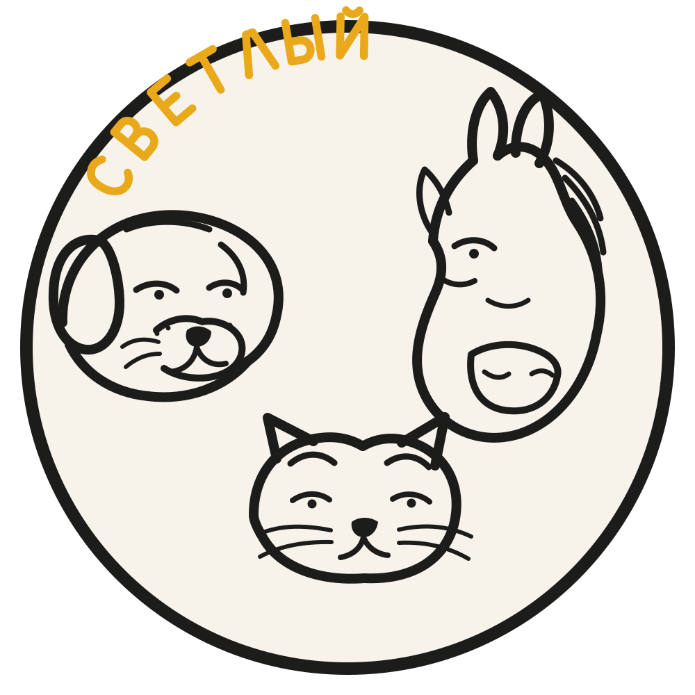
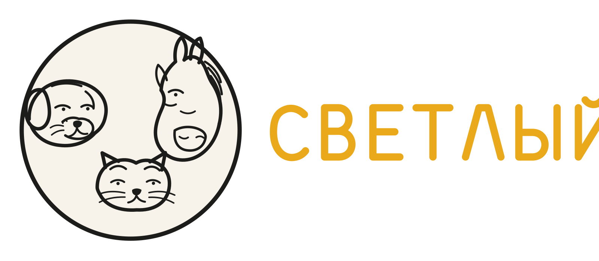
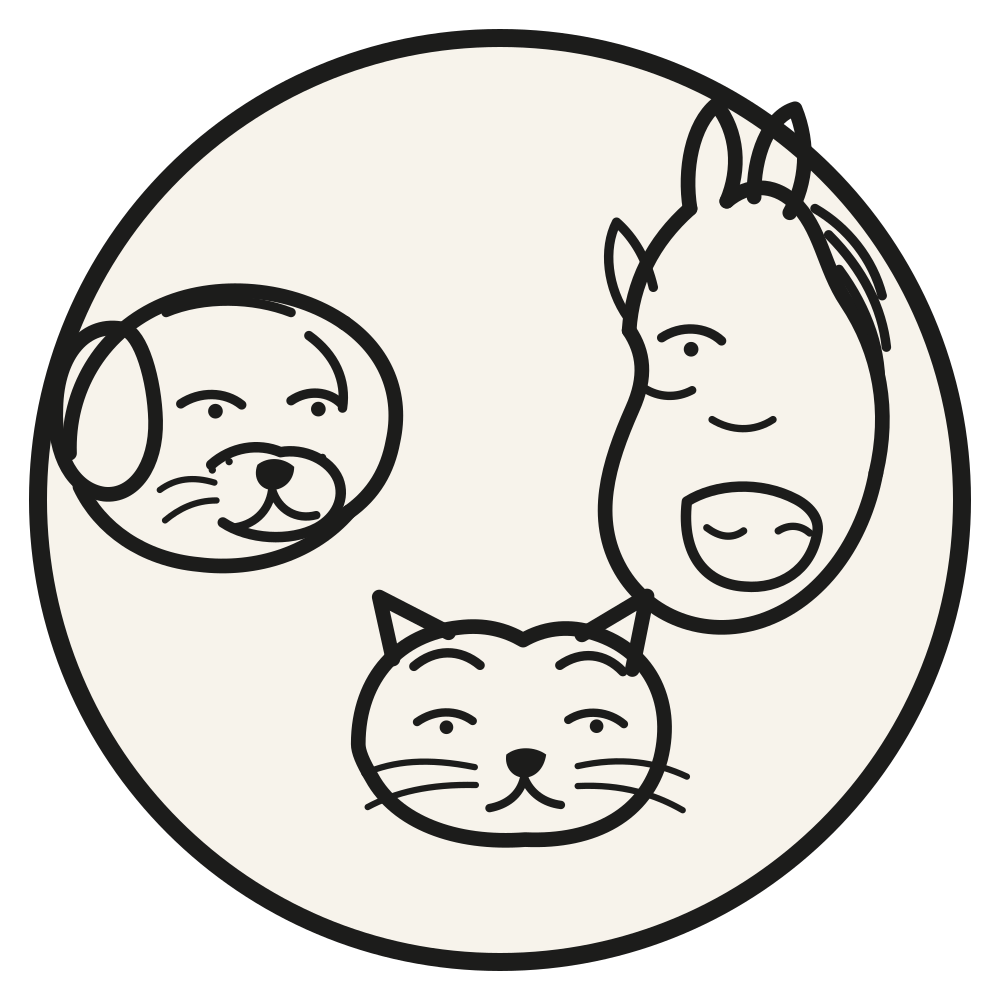
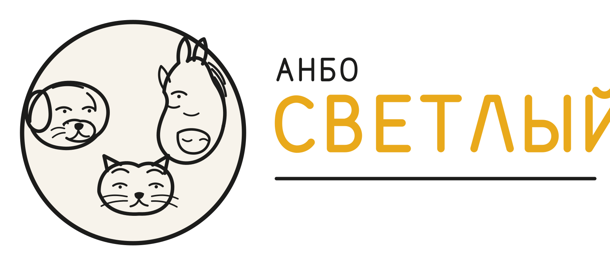
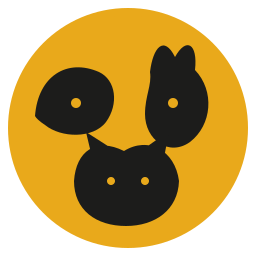

Основная эмблема
Собака, лошадь и кошка остаются центральным образом. Название собрано собственными геометрическими буквами, поэтому SVG не зависит от внешнего шрифта.
Минимальная ширина: 160 px



Палитра
Янтарь#E9A91B
Мягкий чёрный#1C1C1B
Тёплая бумага#F7F3EB
Используйте
- SVG как основной формат.
- Монохром для штампа и гравировки.
- Спокойную подложку на фотографии.
- Охранное поле вокруг знака.
Не используйте
- Растяжение и наклон.
- Случайные цвета и градиенты.
- Тени и дополнительные обводки.
- Детальный знак в favicon.
Микрознак

64 px32 px
16 px